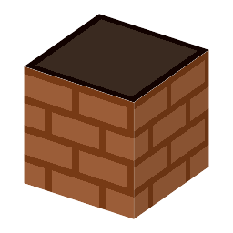

Tuyere・ブロック・Metallurgy
本当の歴史：[1-09] 高炉（銑鉄）（紀元前450年）

①子ども ふいごの風を炉の中へ吹きこむ、焼いた粘土の管。
②学生 高炉の2段目の4面に置く。外側にふいごを置くと、その風が炉に入る。
③大人 羽口のすぐ前が炉の中でいちばん熱い。木炭が勢いよく燃え、できた一酸化炭素が上へ昇りながら鉄鉱石の酸素を奪う。
④ガチ のちの大きな高炉では、熱で溶けないよう羽口を銅で作り、中に水を通して冷やす。吹きこむ風も先に温める（熱風炉、1828年）。
（このアイテムを使うレシピは無い）